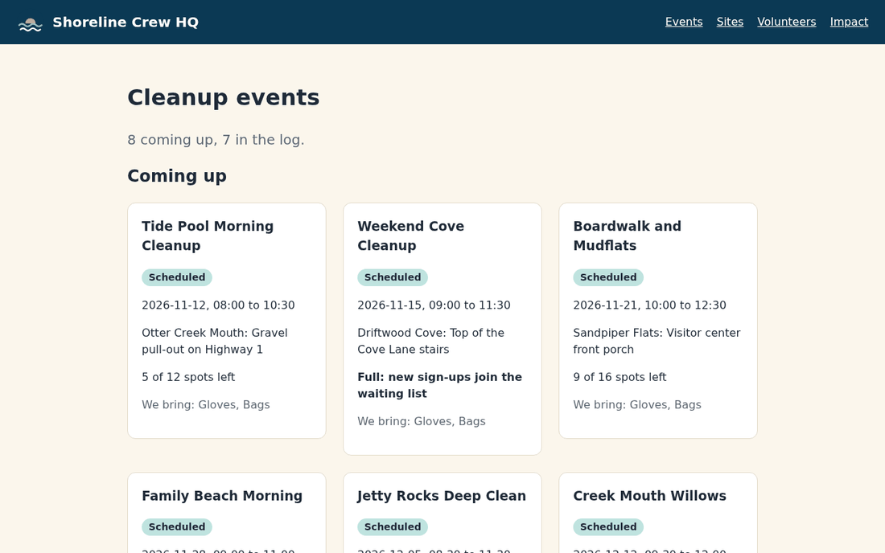

Session 6: Lists, Conditional Rendering, State and Events
How to teach Lessons 3.3 and 3.4: lists with keys React can trust, conditional rendering without the 0 trap, Record tables TypeScript keeps complete and unions that decide what to draw; then state with useState and its types, typed event handlers, snapshots and copies, and where state lives. Two demos, two labs on new data, and the start of both lesson projects: the cleanup events page and its search and filters.
How to Use This Guide
- Session 6 teaches two lessons in the usual rhythm: frame → live demo → guided lab (a kit lab: new practice, never the lesson's own project) → start the lesson's own project. Lesson 3.4's project builds on Lesson 3.3's events page, so the room does 3.3's Steps 1 to 4 and 3.4's Steps 1 to 3; the rest of both projects, the exercises, quizzes and journals go home.
- Type, do not paste. Every command below was run to produce the output printed under it, in a learner's terminal on a copy of the app exactly as a learner has it at the end of the lesson (Scratch snippets) or with the lesson's own deliberate mistake (the project breaks). Where a lesson shows the same command, the kit's output is the lesson's, word for word. Ask for a prediction before every run.
- The lessons are the reference: keep
lesson_09.htmlandlesson_10.htmlopen for the console messages (key warnings, Too many re-renders, value without onChange), the index-key table and the keystroke table, which are browser facts the lessons measured. Labs live inlabs/module-06/. - Teal blocks are hands-on, amber blocks are watch-outs. Lesson codes (3.3, 3.4) match the course site.
Lesson 3.4's project adds search and filters to the events page that Lesson 3.3's project builds. A learner who did not finish 3.3 in the room cannot start 3.4 in the room, and a room that tries to finish both runs out of time in Step 5 of 3.3. The plan: 3.3's Steps 1 to 4 together before the break (data, terrain labels, StatusBadge, the union), Steps 5 to 7 at home; after the break everyone starts 3.4 from a working events page: their own if it is done, otherwise lesson-10-start from the course downloads (the code after Lesson 3.3, with .env.example to copy and npm install to run). Say this at the start so nobody panics at the break. The labs are independent of the project.
Before the Session
- ☐ Code: learners arrive with
shoreline-hqafter Lesson 3.2 (the sites page). Putlesson-09-start.zip,lesson-10-start.zipandlesson-10-end.zipon a USB stick; announcelesson-10-startas the post-break catch-up. - ☐ Files to hand out:
labs/module-06/without thesolution/folders (two labs). Same packages as Session 5's lab:npm installin eachstarter/is quick when the npm cache has them. - ☐ Run the kit check once:
python3 labs/check_labs.py module-06(8 runs, about 15 seconds): both starters fail where they should, both solutions pass their tests and type checks. - ☐ Projector machine: two terminals (API, dev server) and a third for checks; the browser on http://localhost:5173/events with DevTools open on the Console (the key warnings and "Too many re-renders" are console messages); your app at the start of Lesson 3.3 for the first half and
lesson-10-startready for the second. - ☐ Board: name tags (3.3), the four conditional tools in a table (if/early return · ? : · && with a real boolean · null), the clipboard and the round trip (event up → state → props down) for 3.4, and the two placement questions (can it be worked out? who reads and changes it?).
| Symptom | Cause | Fix |
|---|---|---|
| A stray 0 on the page | count && ... with a number | count > 0 && ... (no tool warns). |
Console: Each child in a list should have a unique "key" prop | The key is missing, or inside the item component | key={item.id} on the element map returns. |
| An empty list where items should be | Braces in the map callback and no return (TS2322 void[]) | Parentheses, or return. |
Property 'draft' is missing in type ... | A Record table typed by the union lacks an entry | Add the entry; that is the table doing its job. |
Type 'string' is not assignable to type 'never' | useState([]) | useState<string[]>([]). |
Console: Too many re-renders | onClick={setOpen(!open)}: the setter is called while drawing | Pass a function: onClick={() => setOpen(!open)}. |
The field ignores typing; console says value without onChange | A controlled input nothing updates | Add onChange, or use defaultValue. |
| The count lags one keystroke | A stored filtered list | Derive it during render; keep only the query in state. |
React Hook "useState" is called conditionally (lint error) | A Hook after an early return | Move every Hook to the top of the component. |
Session 6 Agenda (3 hours)
| Clock | Minutes | Segment | What happens |
|---|---|---|---|
| 0:00 | 10 | Warm-up: Lesson 3.2, retrieved | Three questions on Session 5 (one props object, children, a part of a type), on paper, then out loud. |
| 0:10 | 10 | 3.3 Frame and mental model | Name tags at check-in: what a key is for; data in, elements out, nothing changed. |
| 0:20 | 20 | 3.3 Live demo | map and keys, the four conditional tools and the 0 trap, Record tables TypeScript keeps complete, a union on kind. |
| 0:40 | 15 | 3.3 Guided lab | labs/module-06/l3_3-lists-and-conditional-rendering/starter: Tasks 1 and 2 in pairs (a sorted list, a complete table). |
| 0:55 | 25 | 3.3 Start the lesson project | Steps 1 to 4 together: the events as typed data, terrain labels, StatusBadge, the Availability union and SpotsLine. |
| 1:20 | 10 | Break | Anyone behind on Lesson 3.3's project opens lesson-10-start for the 3.4 part (a ready events page). |
| 1:30 | 10 | 3.4 Frame and mental model | The roster on the clipboard (state) and the meeting point (lifting state up). |
| 1:40 | 20 | 3.4 Live demo | A variable that cannot remember, useState and its types, typed handlers, snapshots and copies, derive don't store. |
| 2:00 | 20 | 3.4 Guided lab | labs/module-06/l3_4-state-and-events/starter: Tasks 1 and 2 (copy don't mutate; lift the state up). |
| 2:20 | 30 | 3.4 Start the lesson project | Steps 1 to 3: formatDate, EventFilters as a controlled component, the state in EventsPage. |
| 2:50 | 10 | Wrap-up | Exit ticket (3 questions), homework (3.3 Steps 5 to 7, 3.4 Steps 4 and 5), bring list for Session 7. |
| Total | 180 | Ends at 3:00. |
In the room. The lesson pages estimate 145 + 150 = 295 minutes for a learner working alone; after the warm-up, the break and the wrap-up the room has 150. Each lesson keeps its full shape (model, demo, lab, project start), and the projects split at natural seams: Lesson 3.3 at Step 4 (the union and SpotsLine done; EventCard, EventList and the page at home) and Lesson 3.4 at Step 3 (the filters working; per-card details and the breaks at home).
Goes home (about 2 to 3 hours). Lesson 3.3's project Steps 5 to 7 (EventCard, EventList, EventsPage and App, the home page card, the breaks and the build) and Lesson 3.4's Steps 4 and 5 (per-card details, the breaks and the build), finished in the learner's own app (anyone who used lesson-10-start in class can keep working there, or merge their 3.3 work and continue); both lessons' Exercises 1 and 2 (3.4's Exercise 2 needs a finished 3.4 project); both Quick Quizzes; both journals; the labs' Task 3s.
Protect, in this order: the 3.3 lookup-table step and the 3.4 "when useState needs a type" step (the TypeScript that is new here), the 3.4 project's Step 3 (state in the parent, everything derived), both labs' Task 1. Cut first: the 3.3 union step (it returns in 4.1), then the 3.4 snapshot step (the lesson's table covers it), then the 3.3 project's Step 4 (home).
Opening Segment
Warm-up: Lesson 3.2, Retrieved
10 min- What does React pass to a component, and how does the component read it? Answer: one props object; it destructures it in the parameter list, typed with an interface.
- Why does this fail? (real output below) Answer: Card's
children: ReactNodeis required, and the card has nothing between its tags: an empty card is a mistake TypeScript catches. - What does
Site['image']mean? Answer: the type of the image property of Site (an object with url, alt, width and height).
import { Card } from './components/Card.tsx' export function Reminder() { return <Card title="Before you come" /> }
src/Scratch.tsx:4:11 - error TS2741: Property 'children' is missing in type '{ title: string; }' but required in type 'CardProps'.
4 return <Card title="Before you come" />
~~~~
src/components/Card.tsx:5:3 - 'children' is declared here.
5 children: ReactNode
~~~~~~~~
Found 1 error in src/Scratch.tsx:4- Ten minutes, not more: two lessons wait. Anyone who missed two of three gets Lesson 3.2's summary as homework.
Lesson Plans
Lists and Conditional Rendering
70 min- Turn an array into elements with map, filtering and ordering it first without changing the original
- Explain what a key does, choose a stable one from the data, and read React's key warnings
- Show parts of a component only when they apply with if and early returns, ? :, && and null, and avoid the 0 trap
- Give every value of a union a label with a Record lookup table that TypeScript keeps complete
- Let a discriminated union decide what a component draws, with TypeScript narrowing each case
- Build the HQ's events page from a typed CleanupEvent[] with EventList, EventCard, StatusBadge and SpotsLine, including an empty state
| 10m | Frame: data in, elements out; name tags at check-in |
| 20m | Live demo: map and keys, conditional tools and the 0 trap, lookup tables, a union on kind |
| 15m | Guided lab: l3_3-lists-and-conditional-rendering/starter, Tasks 1 and 2 |
| 25m | Start the lesson project: Steps 1 to 4 |
From the lesson: "At a big cleanup, every volunteer gets a name tag at the check-in table. When the crew splits into teams and shuffles around the beach, the organizer still knows who is who by reading the tags, not by counting heads from the left. A key is that name tag. 'The third person from the left' stops being the same person the moment someone joins the line; 'Theo' stays Theo."
Then the second idea of the lesson: a component is a function, so deciding what it draws is ordinary JavaScript. No loop syntax, no if syntax: map, if, ? :, && and null. And the TypeScript idea that makes this lesson more than JavaScript: "when a value is one of a few words, a lookup table keyed by that union is checked for completeness by the compiler, forever".
In src/Scratch.tsx of the app at the start of Lesson 3.3; the outputs were captured at the end of the lesson and equal the lesson's cards.
- Data in, elements out (3m). In
src/Scratch.tsx: the lesson's SupplyList. Hoveritems:JSX.Element[], inferred. Then filter andtoReversed()(neverreverse()on data you were given).npx tsc -bis silent.const supplies = ['Gloves', 'Bags', 'Line cutters'] export function SupplyList() { const items = supplies.map((item) => <li key={item}>{item}</li>) return <ul>{items}</ul> }
- Keys, and what React says (3m). Draw the name tags on the board. Show the lesson's two console cards (missing key, repeated key) and the index table: "neither tsc nor oxlint says a word about key={index}". The kit checked it: the index snippet lints clean.
Found 0 warnings and 0 errors. Finished in …ms on 25 files with 116 rules using … threads.
- Four ways to show something (5m). The lesson's EventSummary: if + early return, ? :, &&, null. Then take the check away:
src/Scratch.tsx:8:15 - error TS18048: 'event' is possibly 'undefined'. 8 return <h2>{event.title}</h2> ~~~~~ Found 1 error in src/Scratch.tsx:8"TS18048 is TypeScript asking what the screen should show when there is no event." Then the 0 trap: tsc and lint are clean, and React draws: - The 0 trap, rendered (2m).
<div>0</div> <div><p>2 people are waiting for a spot.</p></div>
Fix:waiting.length > 0 && .... - Lookup tables TypeScript keeps complete (5m). The lesson's
missingandmisspelledtables, bothRecord<EventStatus, string>:src/Scratch.tsx:3:7 - error TS2741: Property 'draft' is missing in type '{ scheduled: string; completed: string; cancelled: string; }' but required in type 'Record<EventStatus, string>'. 3 const missing: Record<EventStatus, string> = { ~~~~~~~ src/Scratch.tsx:13:3 - error TS2561: Object literal may only specify known properties, but 'canceled' does not exist in type 'Record<EventStatus, string>'. Did you mean to write 'cancelled'? 13 canceled: 'Cancelled', ~~~~~~~~ Found 2 errors in the same file, starting at: src/Scratch.tsx:3Then the growing union (postponed, TS2741 again) and the looseRecord<string, string>table (TS2532 on every lookup). "Key the table by the union." - A union decides what to draw (2m). The lesson's EventsStatus switch on
state.kind; readmessagebefore narrowing:src/Scratch.tsx:9:45 - error TS2339: Property 'message' does not exist on type 'LoadState'. Found 1 error in src/Scratch.tsx:9 Property 'message' does not exist on type '{ kind: "loading"; }'.Then delete a case:npx tsc -bis silent (the kit ran it). "A table complains about a missing key; a switch does not, until Lesson 5.1."
- Braces in the map callback and no return. The list is empty and tsc's message is long. Coach: "Read the first line and the last message line: what does the callback return?" Self-check Q6.
count && ...with a number. No tool warns. Coach: "What does && give back when the left side is falsy? Is 0 something React draws?" Self-check Q3, Lab 3.3 Task 3.- Index keys to make the warning go away. Coach with the index table: "what does key 0 point at after an insert?" Lesson 3.4's Exercise 2 shows the real damage once rows have state.
Folder: labs/module-06/l3_3-lists-and-conditional-rendering/starter/ (task sheet labs/module-06/l3_3-lists-and-conditional-rendering/TASKS.md); reference labs/module-06/l3_3-lists-and-conditional-rendering/solution/. Three tasks on a real impact report (GET /api/events/e01/impact, typed ImpactReport): Task 1 a list sorted biggest first without changing the data, with keys and an empty state; Task 2 a Record<DebrisCategory, string> table that must match the API's own labels and reject straws; Task 3 a union drawn with a switch, with two bugs no tool reports (a missing case and the 0 trap).
- As shipped (2m):
npm install,npm test(five of six fail),npm run typecheck(one error, in the test file: the TS2578 that tests the table's type).
× Task 1: biggest count first, with labels, and the report itself unchanged
× Task 1: an empty list says so instead of drawing nothing
× Task 2: every category has the API's label
× Task 3: a go call with nobody waiting draws one sentence and no stray 0
✓ Task 3: a delay, and two people waiting
× Task 3: a cancelled call is an alert with its reason
Test Files 1 failed (1)
Tests 5 failed | 1 passed (6)- Tasks 1 and 2 in pairs (10m). Circulate for
sort(the test checks the report afterwards: "which method returns a new array?"), for labels typed in by hand instead of reading the errors ("type the table first, then let TypeScript list what is missing"), and for the key moved off the<li>. - Debrief (3m): "Which tool told you the table was complete?" (tsc, once it was keyed by the union). Task 3 goes home: it is the lesson's 0 trap and missing case, found by tests.
Steps 1 to 4 together (25 minutes); Steps 5 to 7 go home.
- Step 1: the events as typed data (5m). Open http://localhost:4000/api/events?perPage=50 and paste the 15 public cleanups into
src/data/events.ts(the same move as Session 5's sites). The public list has no drafts: "a real empty list to design for". - Step 2: friendlier terrain labels (5m). Lesson 3.2's promise: a module-level
Record<Terrain, string>in SiteCard; /sites now says Sandy beach, Rocky shore, Tidal marsh, Sand and rocks. - Step 3: more badge tones, and StatusBadge (8m). Badge exports
BadgeTonewith two more members; StatusBadge looks up label AND tone in one table. Delete the draft row on the projector:shoreline-hq/src/components/StatusBadge.tsximport type { EventStatus } from '../api/types.ts' import { Badge, type BadgeTone } from './Badge.tsx' // One entry per status: TypeScript reports a missing or misspelled one. const statusBadges: Record<EventStatus, { label: string; tone: BadgeTone }> = { draft: { label: 'Draft', tone: 'neutral' }, scheduled: { label: 'Scheduled', tone: 'info' }, completed: { label: 'Completed', tone: 'success' }, cancelled: { label: 'Cancelled', tone: 'danger' }, } interface StatusBadgeProps { status: EventStatus } export function StatusBadge({ status }: StatusBadgeProps) { const { label, tone } = statusBadges[status] return <Badge label={label} tone={tone} /> }
src/components/StatusBadge.tsx:5:7 - error TS2741: Property 'draft' is missing in type '{ scheduled: { label: string; tone: "info"; }; completed: { label: string; tone: "success"; }; cancelled: { label: string; tone: "danger"; }; }' but required in type 'Record<EventStatus, { label: string; tone: BadgeTone; }>'. Found 1 error in src/components/StatusBadge.tsx:5Put it back. The CSS (Coral, the outline badge, the event list and the empty state) is in the lesson; paste it. - Step 4: a union for the spots line (7m).
src/utils/availability.ts(a plain .ts file: data in, data out) and SpotsLine's switch. Hoveravailabilityinsidecase 'open':.shoreline-hq/src/utils/availability.tsexport type Availability = | { kind: 'open'; spotsLeft: number } | { kind: 'full' } | { kind: 'closed' } export function getAvailability(event: CleanupEvent): Availability { if (event.status !== 'scheduled') { return { kind: 'closed' } } const spotsLeft = event.capacity - event.spotsTaken return spotsLeft > 0 ? { kind: 'open', spotsLeft } : { kind: 'full' }
Done in the room = Steps 1 to 4 compile (npx tsc -b silent) and /sites shows the new labels. Goes home: Steps 5 to 7 (EventCard, EventList, EventsPage, App's CurrentPage, the home page's Next cleanup card, three breaks and the build: 35 modules). The finished page:

Ask these out loud during the demo and the lab:
- What does React use a key for? Answer: to match each new item with the one it drew last time, so it can keep, update, move, add or remove the right ones.
- Which conditional tool draws a whole component differently? Answer:
ifwith an early return. - What do you get from a
Record<EventStatus, string>that aRecord<string, string>cannot give? Answer: a compile error for a missing or misspelled status, and lookups that are never undefined. - Inside
case 'failed':, what is the type of state? Answer: only the failed member, sostate.messageis allowed.
Workbook self-check, items Q1 to Q6:
Answers: Q1 B) On the <li>, the element the map callback returns; Q2 Add a draft entry to the first table; spell the key cancelled (the API's word) in the second; Q3 C) <div>0</div>; Q4 D) It compiles, and cards of that kind silently lose their spots line; Q5 error TS2532: Object is possibly 'undefined'.: with any string as a key nothing guarantees the entry exists; key the table by the union (Record<EventStatus, string>); Q6 A) Parentheses instead of braces, (item) => (<li ...>), or a return inside the braces. Full set with explanations in the Answer Key.
Support: the four conditional tools as a card on each table, with the HQ example of each (EventList's early return, the site name ternary, "We bring" with length > 0 &&, SpotsLine's null). Learners who struggle with map write one list out by hand first (three <li> elements), then the map.
Stretch: Lab 3.3's stretch (a moved call: does anything warn?); the lesson's Exercise 3 (a few kind) and the Bonus Challenge (upcoming-cleanup counts on site cards: should SiteCard import the events or receive a number?).
State and Events
80 min- Explain why a plain variable cannot remember anything between renders, and give a component state with useState
- Handle clicks, typing and menu changes with typed event handlers such as ChangeEvent<HTMLInputElement>, and pass a function instead of calling it
- Choose when useState<T> needs a type argument: unions, empty arrays and "nothing yet" values
- Update state from a snapshot or with an updater function, and copy objects and arrays instead of changing them
- Lift shared state to the closest common parent, pass it down as props with callback props for changes, and derive everything else
- Add search, a status filter and per-card details to the HQ's events page, plus readable dates with a formatDate helper
| 10m | Frame: the clipboard (state), the meeting point (lifting state up) |
| 20m | Live demo: variable vs state, typed handlers, useState<T>, snapshots and copies, derive don't store |
| 20m | Guided lab: l3_4-state-and-events/starter, Tasks 1 and 2 |
| 30m | Start the lesson project: Steps 1 to 3 |
From the lesson: "At a cleanup, the organizer at the welcome table keeps a clipboard. Volunteers come and go, the organizer walks off for coffee and comes back, but the clipboard still says who has checked in. State is that clipboard: React holds it for your component, hands you what it says each time the component is drawn, and gives you one pen to change it. Writing on your palm, a local variable, washes off at the next render."
Then the second picture for the second half: "Two teams at different ends of the beach cannot shout to each other, so they agree on a meeting point with the organizer. The organizer holds the plan; each team gets its instructions and radios back what changed. And nobody writes the number of bags so far on a second clipboard: they count the pile when someone asks." Write the two placement questions under it: can it be worked out from what you have? who reads it and who changes it?
In src/Scratch.tsx (learners: their app or lesson-10-start); the outputs equal Lesson 3.4's cards. Runtime facts (the page staying at 0, "Bags: 1", the lagging count) are the lesson's own browser measurements: show them in the browser, not from the kit.
- A variable cannot remember (3m). The lesson's CheckInCounter with
let checkedIn = 0. tsc is happy; the linter is not (first of two warnings):⚠ react(immutability): Cannot reassign variable after render completes ╭─[src/Scratch.tsx:5:5] 1 │ export function CheckInCounter() { 2 │ let checkedIn = 0 · ────┬──── · ╰── `checkedIn` is declared here 3 │ 4 │ function handleClick() { 5 │ checkedIn = checkedIn + 1 · ────┬──── · ╰── Cannot reassign `checkedIn` after render completes 6 │ console.log(checkedIn) ╰────"Consider using state instead." Then the useState version: hover the pair (number,Dispatch<SetStateAction<number>>). Draw the clipboard. - Typed handlers (4m). The lesson's SearchBox with a named
handleChange(event: ChangeEvent<HTMLInputElement>). Remove the annotation:src/Scratch.tsx:6:25 - error TS7006: Parameter 'event' implicitly has an 'any' type. 6 function handleChange(event) { ~~~~~ Found 1 error in src/Scratch.tsx:6Inline arrows get their types from the prop; named functions need the annotation. Version note: hovers showChangeEvent<HTMLInputElement, HTMLInputElement>with @types/react 19.3. - When useState needs a type (5m).
useState('all')acceptssetStatus('finished')without a murmur (the kit ran it: silent). Add the type argument:src/Scratch.tsx:10:52 - error TS2345: Argument of type '"finished"' is not assignable to parameter of type 'SetStateAction<StatusFilter>'. 10 <button type="button" onClick={() => setStatus('finished')}> ~~~~~~~~~~ Found 1 error in src/Scratch.tsx:10ThenuseState([]):never[]("Type 'string' is not assignable to type 'never'"). The table: union, empty array, nothing yet, object. - Snapshots and copies (4m). The lesson's BagCounter (Add 3 wrong shows 1, Add 3 with updaters adds 3) and SavedEvents (push then set: still "0 saved"). Both pass tsc AND lint: the kit ran the push version, both silent. "A habit, not something a tool catches." The copy-don't-mutate table on the board.
- Derive, don't store (4m). The lesson's EventSearch with a stored
visiblelist (it compiles and lints clean) and the keystroke table: c, co, cov, cove. Then the derived version. "The fix is not a cleverer update; it is less state." Draw the round trip: event up, state changes, props down.
- Calling the handler instead of passing it (
onClick={setOpen(!open)}). TS2322 "Type 'void' is not assignable to type 'MouseEventHandler...'" and, on the dev server, "Too many re-renders". Coach: "Do you want it to run now, or when someone clicks?" - Changing state in place (
push, then set the same array). No tool warns. Coach: "Is it a new array? How would React know?" Lab 3.4 Task 1. - Storing what you can work out. Coach with the two questions; the keystroke table is the proof. Self-check Q12, Lab 3.4 Task 3.
Folder: labs/module-06/l3_4-state-and-events/starter/ (task sheet labs/module-06/l3_4-state-and-events/TASKS.md); reference labs/module-06/l3_4-state-and-events/solution/. The tests click, pick and type like a person (user-event). Task 1: a shift picker whose clicks change the array React already holds (and useState([])); Task 2: a terrain menu that keeps its own state, so the list beside it never hears about it; Task 3: a stored list that is one keystroke behind.
- As shipped (2m):
npm test(four of five fail),npm run typecheck(three TS2345 errors aboutneverin ShiftPicker).
src/ShiftPicker.tsx:16:17 - error TS2345: Argument of type 'string' is not assignable to parameter of type 'never'. src/ShiftPicker.tsx:26:65 - error TS2345: Argument of type 'string' is not assignable to parameter of type 'never'. src/ShiftPicker.tsx:27:32 - error TS2345: Argument of type 'string' is not assignable to parameter of type 'never'. Found 3 errors in the same file, starting at: src/ShiftPicker.tsx:16
- Task 1 in pairs (8m):
useState<string[]>([])and an updater that returns a NEW array. Ask: "does the new value depend on the old one?" (yes: updater). - Task 2 (8m): the menu becomes controlled (
value,onChange), the guard narrows the select's string, the parent holdsuseState<TerrainChoice>and derives the visible list. It is EventFilters in miniature: say so, it is the project's next step. - Debrief (2m): "Which component owns the terrain now, and why there?"
Steps 1 to 3 together (30 minutes) on a working events page (own or lesson-10-start); Steps 4 and 5 go home.
- Step 1: dates people can read (6m).
src/utils/format.tswith a module-levelIntl.DateTimeFormatandformatDate(date). Explain the comment: a date alone is midnight UTC, still the day before on the US west coast; withT00:00it is local midnight. Use it in EventCard and the home page.shoreline-hq/src/utils/format.tsimport type { DateString } from '../api/types.ts' // Made once, used for every date: weekday, month name, day and year const dateFormat = new Intl.DateTimeFormat('en-US', { weekday: 'short', month: 'short', day: 'numeric', year: 'numeric', }) // The API's dates are days on the crew's calendar ("YYYY-MM-DD"). JavaScript reads a date // alone as midnight UTC, which is still the day before on the US west coast; with a time // and no time zone it reads the local midnight instead. export function formatDate(date: DateString): string { return dateFormat.format(new Date(`${date}T00:00`)) }
- Step 2: EventFilters, a controlled component (12m). Props in, callbacks out, no state. Pass the select's string straight up first, so the room sees why the guard exists:
src/components/EventFilters.tsx:26:20 - error TS2345: Argument of type 'string' is not assignable to parameter of type 'StatusFilter'. 26 onStatusChange(value) ~~~~~ Found 1 error in src/components/EventFilters.tsx:26ThenisEventStatus(value) ? value : 'all'(Lesson 2.4's guard).<search>, labels withhtmlFor, and Clear filters only while filtering. - Step 3: state in EventsPage, everything else derived (12m). Two pieces of state (what the person chose);
visible, the three lists,filteringand the count line derived. Pass the setters as callbacks. Then try it:shoreline-hq/src/pages/EventsPage.tsxexport function EventsPage() { const [query, setQuery] = useState('') const [status, setStatus] = useState<StatusFilter>('all') // Derived values: worked out from state on every render, never stored const search = query.trim().toLowerCase() const visible = events.filter((event) => matchesFilters(event, search, status)) const upcoming = visible.filter((event) => event.status === 'scheduled') const drafts = visible.filter((event) => event.status === 'draft') const past = visible .filter((event) => event.status === 'completed' || event.status === 'cancelled') .toReversed() const filtering = search !== '' || status !== 'all' const noMatches = 'No cleanups here match your filters.' function clearFilters() {

Every keystroke updates query in EventsPage; the three lists, the count line and the Clear button are all worked out from it on the next render.
Done in the room = typing filters the three lists and the count line, the status menu works, Clear filters resets both. Goes home: Step 4 (per-card details with aria-expanded) and Step 5 (keyboard and phone checks, two breaks, the build: 37 modules). The first break, in case anyone asks now:
src/pages/EventsPage.tsx:19:74 - error TS2345: Argument of type 'string' is not assignable to parameter of type 'StatusFilter'. src/pages/EventsPage.tsx:38:9 - error TS2322: Type 'string' is not assignable to type 'StatusFilter'. Found 2 errors in the same file, starting at: src/pages/EventsPage.tsx:19
Ask these out loud:
- Why can a plain variable not count clicks? Answer: changing it does not make React draw again, and every render starts the function from the top.
- When does
useStateneed a type argument? Answer: a union of a few words, an empty array, a "nothing yet" value (and objects of a known shape). - When do you pass an updater function to a setter? Answer: when the new value depends on the old one.
- Where does the search text live, and why? Answer: in EventsPage, the closest common parent of the filters and the lists.
Workbook self-check, items Q7 to Q12:
Answers: Q7 B) useState<StatusFilter>('all'): the type argument holds every update to the union; Q8 never[] (an empty array tells TypeScript nothing); useState<string[]>([]); Q9 C) event: ChangeEvent<HTMLInputElement>, imported with type from react; Q10 D) In SiteFinder, the closest common parent, passed down as props; Q11 A) Move the useState call above the early return, so it runs on every render; Q12 query in the handler is this render's snapshot, the text BEFORE the keystroke; keep only query in state and derive the list during render. Full set with explanations in the Answer Key.
Support: the round trip drawn for the search box, step by step, with the learner's own value typed in ("j" goes up through onQueryChange, setQuery stores it, EventsPage draws again, the lists are filtered with "j").
Stretch: Lab 3.4's stretch (a Clear button); the lesson's Exercise 3 (an "only cleanups with spots left" checkbox) and the Bonus Challenge (a typed Sort by menu with its own guard).
Closing
- Write a lookup table that gives every
Terraina label so that TypeScript reports a missing one. Answer:const terrainLabels: Record<Terrain, string> = { sand: ..., rocky: ..., marsh: ..., mixed: ... }. useState('all')for a status filter: what goes wrong, and the fix? Answer: the state widens tostringand accepts any word;useState<StatusFilter>('all').- Name the two questions that place a piece of state. Answer: can it be worked out from what you already have (then derive it)? who reads it and who changes it (closest common parent)?
- Finish both lesson projects. 3.3: Steps 5 to 7 (EventCard, EventList, EventsPage, App, the home card, three breaks, 35 modules). 3.4: Steps 4 and 5 (details per card, the breaks, 37 modules). If you used
lesson-10-startin class, finish 3.4 there or bring your own 3.3 work up to it first. - Lesson exercises: 3.3 Exercises 1 and 2 (skills table; the roster summary); 3.4 Exercises 1 and 2 (bag tallies; index keys on the finished page). Exercise 3 of each is a stretch.
- Both Quick Quizzes and the workbook's self-check Q1 to Q12 and predict items.
- Labs: Task 3 of each (the 0 trap and the missing case; the lagging count).
- Journal: both entries (keys in your own analogy; where each piece of state lives and why).
- Before the Next Lesson: all three checks pass,
src/Scratch.tsxdeleted; the events page with the keyboard only, once, in dark mode.
shoreline-hqat the end of Lesson 3.4 (search and filters working), orlesson-11-startfrom the course downloads.- Session 7 is one lesson, 3.5 Forms and Actions: React 19's form actions and
useActionState. - The workbook and your journal.
If You Run Long or Short
- Protect: the lookup tables (3.3), useState's types (3.4), 3.4's project Step 3, both labs' Task 1.
- Cut first (saves 2m): the 3.3 union step (Lesson 4.1 uses the same pattern).
- Cut second (saves 4m): the 3.4 snapshots step; point at the lesson's table.
- Cut third (saves 7m): the 3.3 project's Step 4 goes home with Steps 5 to 7.
- Lesson 3.4's Exercise 2 live on the finished page: index keys, open the first card's details, type cove, and watch the open state land on Weekend Cove.
- Lesson 3.3's Exercise 2 on the projector: the roster summary's two errors, then the third after the first fix (TS2561 hides TS2741), then the silent
length &&. - The labs' Task 3s together.